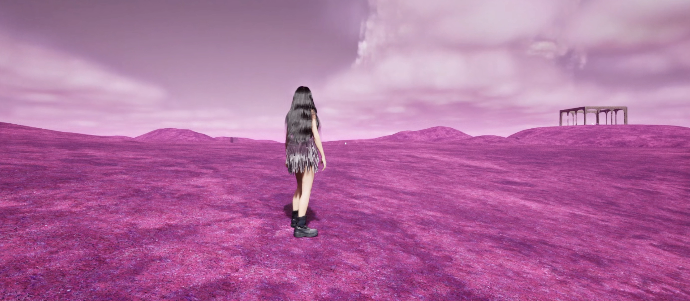
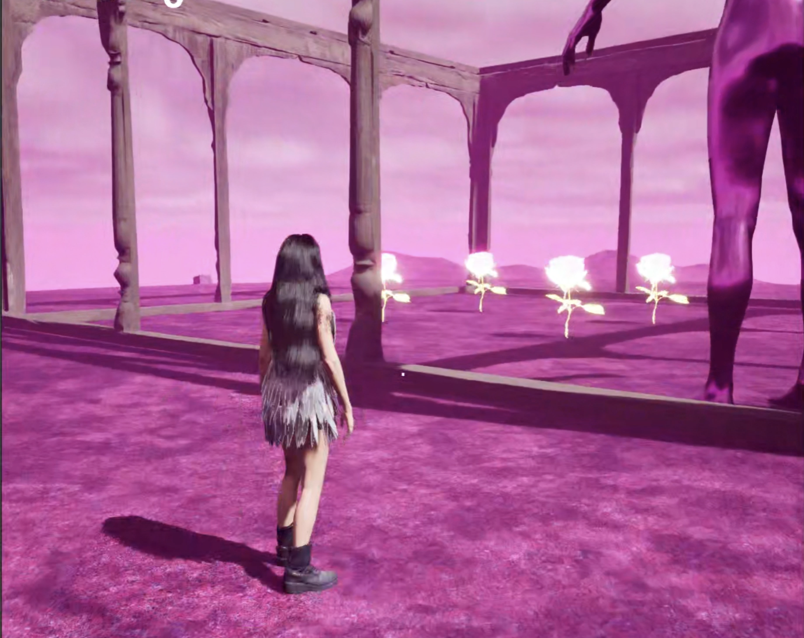
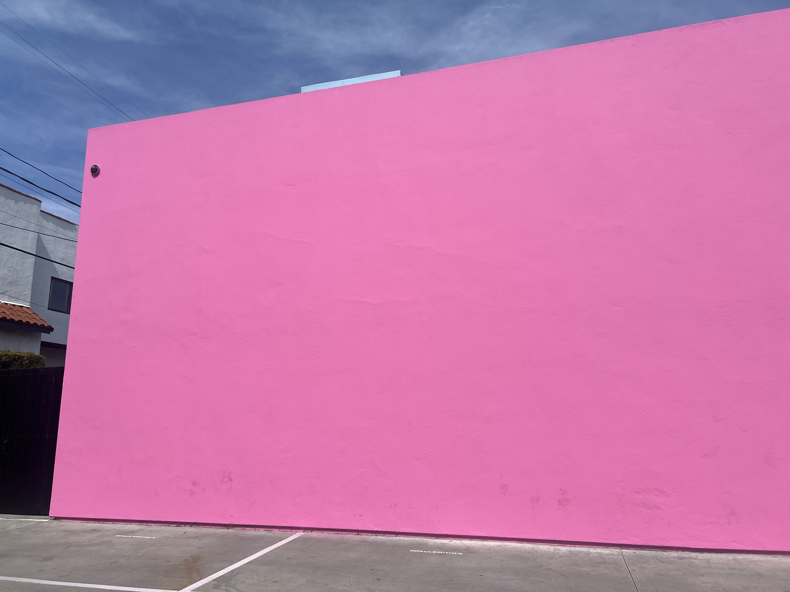
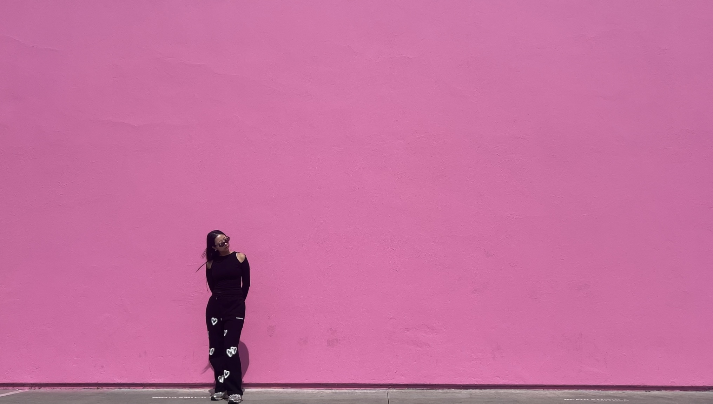

WEEK 9
0605 - 1205WORK PROGRESS
Artwork 4&5: Unreal Game + TouchDesigner

Game:
This week’s challenge was to manage time effectively since I had to fly to LA for a couple of days.
In the game, I’ve worked on finishing four spots in the pink world map:
- Mirrors + Facial Sculptures + Pink Grass + Glowing Roses
- Arch + Glowing Roses + Healing Actors
- Cliffs + Cactus + Glowing Roses
- Portal + Glowing Roses
All four of the spots will have large assets so the players can find them when they look around, even without maps. I was considering implementing maps that players can toggle on and off to navigate to certain locations. However, instead, at least one asset from each location is designed to be large enough to be spotted by the players. Each spot will have glowing roses to collect, and they are only at those four locations. This encourages players to search for these spots to collect the roses and open the portal.

Mirrors + Facial Sculptures + Pink Grass + Glowing Roses
The facial sculptures are from the last project, “Quantum Faces,” and I’ve also used one of them as an accessory for Minty’s first dress. By incorporating these sculptures into the current project, it connects the projects to each other, and I thought it was also effective in building a distinct artistic style. Bringing these facial sculptures into some of the renders and the game made me feel the connection between my projects. It was good to see them there, as if meeting an old friend! They were designed to explore the concept of human emotions in relation to self-reflection, so I thought they were the perfect assets to go with mirrors. This enhances the concept of the project by designing the experience for players to look at their reflections in the mirror for contemplation.

Arch + Glowing Roses + Healing Actors
The arch is placed at a high altitude on the map. I want this place to be a place of healing, so I’ve included healing roses along with glowing roses. Once you collect the healing rose actors, your health will increase. I might add some post-process effects that are triggered when players enter the room, making everything even more pink, since it’s a healing place.

Cliffs + Cactus + Glowing Roses
This is where the cliffs and the cactus are, along with the glowing roses. The cliffs didn’t have any collision boxes to block players from passing through the models. Normally, I would have blocked the players from going through the models, but I wanted to keep it this way because the inside looked quite interesting. It almost seemed like a different dimension of the place, like a secret area hidden inside the cliffs. Perhaps I can design something in there to make the most out of it.

Portal + Glowing Roses
The last place is where the portal is, located at the edge of the lake. I’ve also placed the glowing roses in the water so they can be collected.

TouchDesigner Interactive Piece
I’ve worked on another visual for the interactive piece. It is created using blob tracking, which tracks the displacement of the visuals. For the visual source, I’ve used 3D roses and 2D images, and the players can switch the source images. I’ve included four different sources to switch between, but more can be added as desired.
The automated movement is created using noise in TouchDesigner. I liked the idea of tracking the displacement or distortion of the visuals. By showing where the displacement is happening, it emphasises the distortion of the visuals. It highlights the fact that they are being distorted.
I’ve also started working on the generative music for the piece in Ableton. Since it will be played for hours in the exhibition, I wanted to create generative music that avoids repeating too much.
 
While I was in LA, I recorded some footage for a music video. I went to the famous pink wall on Melrose Street and recorded 4K videos of myself walking around in front of it. Perhaps I could place Minty right next to me in that scene. Originally, I wanted to try going to the desert in LA, but due to time constraints, I couldn’t film any desert scenes.